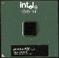

|
|
| 当前位置：电脑报电子版 > 1999 年 > 45 期 > 硬件周刊 > Socket370处理器的新贵 |
| 《 Socket370处理器的新贵 》 |
| 1997年英特尔发布PentiumⅡ处理器并转向Slot 1架构时，业界很多人都认为这并非一个明智的决定。但内置二级缓存的PentiumⅡ处理器强大的性能表现，很快就让用户转变了看法，Slot 1也就成为主流系统架构。可是，SECC（单边接触盒）的封装方式使得产品成本提高，在很长一段时间内，只能用于高端处理器市场。1998年8月英特尔面向低端市场发布了代号为“Mendocino”新赛扬系列处理器，在处理器的核心内置了二级缓存（On die），它不同于普通PentiumⅡ封装在电路板上的二级缓存（On board），并逐步把赛扬处理器的支持架构从Slot 1转向Socket370，封装方式也转换成为PPGA（Plastic Pin Grid Array，塑料针状矩阵封装)。在前不久发布的新Coppermine处理器中，英特尔推出了采用Socket370架构的FC－PGA处理器。
一、FC－PGA处理器的特征与定位 FC－PGA（Filp Chip－ Pin Grid Array，反转芯片针状矩阵封装）的PentiumⅢ处理器(见下图)，同样采用Coppermine核心，使用0.18微米技术制造，目前发布的FC－PGA处理器系列包括两种主频的产品：500MHz和550MHz，产品名称为PentiumⅢ500E和PentiumⅢ550E，两者都运行在100MHz的系统前端总线上，并在处理器核心内置以主频时钟运行的256KB二级缓存，这两款处理器的使用电压为1.60V，而Slot 1架构的Coppermine处理器则运行在1.65V。（Coppermine的技术特征可参见本报44期17版《Coppermine：英特尔的世纪杀手》一文）。FC－PGA处理器是英特尔针对高性能低价格市场的竞争推出的，并不面向低端市场。因为英特尔推出的FC－PGA处理器并不是低价芯片，PentiumⅢ500E的价格是239美元，而赛扬500的价格是123美元。对于想要获得更快速度和更高性能的用户来说，可以不必花费很多就可以拥有与Slot 1架构Pentium ⅢE处理器相同的性能。而且在未来的发展趋势中，英特尔可能在2000年末将全面以FC－PGA封装的处理器代替现有的SECC封装的处理器。 二、Socket370架构与VRM8.4规格 FC－PGA处理器与Slot 1处理器最大的不同，就是提供Socket370架构的兼容，但这个所谓的“Socket370兼容”并不意味着FC－PGA处理器能够工作在所有的Socket370主板上，实际上它只是兼容Socket370这个界面(它们必须插在Socket370的插座上）。因而为了保证FC－PGA处理器的良好运行，必须要求主板有以下特征：主板必须有一个Socket370架构；这块主板支持1.60V的核心电压甚至更低；还有更重要的一点，这块主板还必须支持VRM8.4的直流电压调节器标准，目前市场流行的Socket370主板基本都符合头两点要求，但在第三点上并不能保证FC－PGA系统的良好运行。实际上英特尔的每一款处理器发布时，都有一个制定好的指导标准交给主板厂商，让主板能够充分与新处理器保持最高的兼容性。通常这个指导标准会说明VRM（Voltage Regulator Module，电压调节模块）的规格。最初PentiumⅡ发布时，主板厂商遵循的是VRM8.1的规格，而赛扬处理器所遵循的是VRM8.2的规格。英特尔的高端处理器和多处理器系统使用的是VRM8.3。 既然VRM的规格各不相同，那么这样是否能够适让“老”主板用于FC－PGA处理器呢？实际规格制定时，每个VRM的规格都能够向后兼容，以保证在较长的时间内能够应用于同系列或同代号的处理器产品，但这种兼容性也是十分有限的（英特尔也无法预测它未来处理器所要求的电压）。 另一方面，FC－PGA仍然没有改变赛扬最初规定的Socket370的VID（Voltage Identification Definition，电压标识定义），这意味着FC－PGA的VID针脚的定义和Socket370的赛扬是相同的，应该说向下兼容性是存在的，赛扬处理器可以工作在兼容FC－PGA的新Socket370主板上。 三、FC－PGA处理器的主板支持 从上述的分析看到Socket370的主板可能无法支持新的FC－PGA处理器，目前所有的基于i810e芯片组的主板都支持FC－PGA处理器而且全兼容VRM8.4规格。i810e是英特尔的i810芯片组的改进版本，除了保持i810原有的技术特性外，还增加了133MHz前端系统总线的支持以及可选的133MHz显示缓存支持。但i810芯片组内置的i752图形芯片，对于当今游戏的流行趋势，并不是一个很好的解决方案。虽然目前仅有i810e提供了VRM8.4的支持，但对FC－PGA处理器来说，这个平台无法充分发挥它的性能。但Slot1架构的PentiumⅢE系列并没有这么多的限制，能够兼容老主板，因此它们不须要依附于VRM8.4的规格，可见英特尔之所以推出VRM8.4的规格，最终目的是成为所有厂商支持的工业标准。所以FC－PGA的PentiumⅢ无法安装在其他主板上，而只能是新的Socket370主板。现在市场Socket370转接卡，虽然能够方便地实现Slot1主板插接Socket370处理器，但没有一款Slot1主板与VRM8.4规格兼容，最终的结果仍然与Socket370主板相似。但这并非是完全没有可能，如果Socket370转接卡厂商自行安装符合VRM8.4规格的调节器，这样就有可能在Slot1主板上提供对FC－PGA的处理器支持，当然成本回升高。 四、FC－PGA处理器的超频 0.18微米技术制造的FC－PGA处理器本身就意味着它具有强大的超频能力，实际上在测试中，600MHz的PentiumⅢ E的工程样品中，600MHz的产品很容易地就可超频到700MHz(工程样品没有锁倍频，可以毫无困难地以7×100MHz的设定工作)，事实上600MHz FC－PGA在浮点性能上的表现与600MHz的PentiumⅢ很接近，更令人惊讶的是，在散热良好的情况下，500MHz的FC－PGA芯片将能够运行在620MHz（124MHz×5)频率上。五、结语 FC－PGA作为新一代的Coppermine处理器，最初感觉像是Socket370赛扬处理器的更高主频版本，但从上面的技术分析可以看到，FC－PGA处理器只是借助了Socket370的界面。实际见到的FC－PGA处理器，除了针脚排列方式相同外，其他方面如外型或表面封装都与原来的赛扬处理器有很大的不同，FC－PGA处理器的封装基片比赛扬薄得多也轻得多，以至于拿在手中都小心翼翼，怕把它弄坏了。应该说，FC－PGA处理器完全是高性能低价格的产品，目前缺少的只是Socket370主板的支持，但这一点并不会成为问题，许多厂商已开始增加VRM8.4规格的支持，新一轮的Socket370主板必定会完全支持FC－PGA处理器。 |
| 下载本期推荐软件 | 页 首 |
| 《电脑报》版权所有，电脑报网站编辑部设计制作发布 |